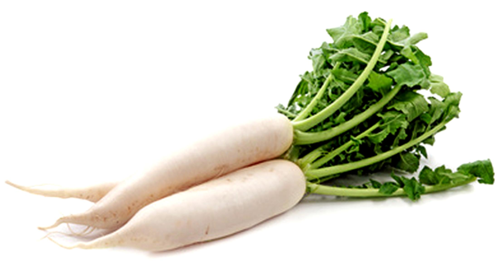

मूली स्वयं हजम नहीं होती, लेकिन अन्य भोज्य पदार्थों को पचा देती है। भोजन के बाद यदि गुड़ की 10 ग्राम मात्रा का सेवन किया जाए तो मूली हजम हो जाती है।
* मूली का रस रुचिकर एवं हृदय को प्रफुल्लित करने वाला होता है। यह हलका एवं कंठशोधक भी होता है।
* घृत में भुनी मूली वात-पित्त तथा कफनाशक है। सूखी मूली भी निर्दोष साबित है। गुड़, तेल या घृत में भुनी मूली के फूल कफ वायुनाशक हैं तथा फल पित्तनाशक।
* यकृत व प्लीहा के रोगियों को दैनिक भोजन में मूली को प्राथमिकता देनी चाहिए।
* उदर विकारों में मूली का खार विशिष्ट गुणकारी है।
* मूली के पतले कतरे सिरके में डालकर धूप में रखें, रंग बादामी हो जाने पर खाइए। इससे जठराग्नि तेज हो जाती है।
* मूली के रस में नमक मिलाकर पीने से पेट का भारीपन, अफरा, मूत्ररोग दूर होता है।
* मूली की राख को सरसों के तेल में फेंटकर मालिश करने से शोथ दूर होता है। पांडु व पीलिया में मूली के पत्तों का रस निकाल लें और आग पर चढ़ा दें। उबाल आने पर पानी को छान लें। दो तोला (20 ग्राम) लाल चीनी मिलाएँ। 9-10 दिनों तक सेवन करें। इससे नया खून बनना प्रारंभ हो जाता है।